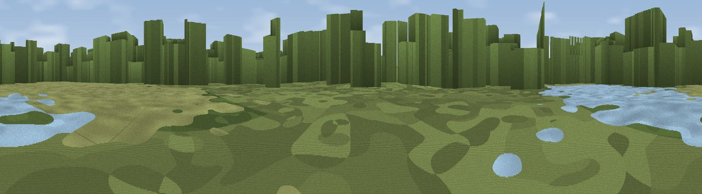

Wetland Hide
#45527 in England · top 91% of its area beats it · near Sculthorpe · access?Where it is
The exact computed spot (TF 89924 29928). Click the marker for map links.
Public access: no public right of way or access land is recorded at this exact spot — it may be on private land. Computed from Natural England's CRoW access layer and OpenStreetMap rights of way — not the legal definitive map. Always verify locally.
The view, rendered

A 360° render of this exact spot computed from the terrain model, tree cover and land cover — summer colours, afternoon light, calibrated against photographs of famous viewpoints. Real trees, hedges and buildings will differ in detail.
The panorama
Grey silhouette: terrain skyline in each direction (720 bearings, Earth curvature and refraction included). Dashed green: skyline with trees (+15 m) and buildings (+8 m) as obstacles. Blue strip: how far the ground is visible on each bearing.
Where the view opens
Wedge length = distance to the farthest visible ground on that bearing (vegetation-aware). Rings at 10, 25 and 50 km.
What fills the view
43% woodland · 33% cropland · 20% grassland · 3% water · 1% built-up
Angular shares of the visible panorama (visual magnitude), not map area. Landscape diversity 0.53 (0–1 Shannon).
Key numbers
More beautiful places nearby
The staircase of upgrades: each row has a higher view potential than everything closer. Driving times are estimates from straight-line distance, calibrated against real road routing — check an actual route before setting out.
| Place | Direction | Drive | Score |
|---|---|---|---|
| Egmere Hill | NNE · 7 km | ~14 min | 43.8 |
| Viewpoint near Burnham Market | NNW · 13 km | ~24 min | 49.2 |
| Viewpoint near Morston | NNE · 19 km | ~32 min | 53.5 |
| Viewpoint near Salthouse | NE · 21 km | ~35 min | 65.4 |
| Viewpoint near Weybourne | ENE · 24 km | ~39 min | 68.3 |
| Viewpoint near Claxby | NW · 102 km | ~127 min | 71.5 |
| Broombriggs Hill | W · 139 km | ~162 min | 74.4 |
| Viewpoint near Woodhouse Eaves | W · 139 km | ~163 min | 77.7 |
52.83339, 0.81797 · source: osm viewpoint · position refined by local search. Computed location — check access rights before visiting.